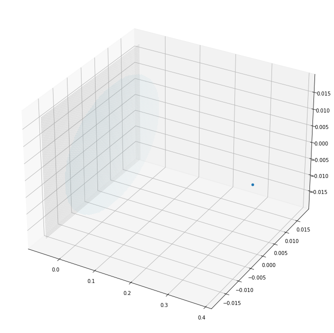
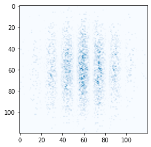

import torch
import numpy as np
import gradoptics as optics
import matplotlib.pyplot as plt
from torch.distributions.multivariate_normal import MultivariateNormal
Matplotlib created a temporary config/cache directory at /var/folders/tg/2_q32n3x5q75j4ytd6n3kmvh0000gp/T/matplotlib-o3t0ut2c because the default path (/Users/stanford/.matplotlib) is not a writable directory; it is highly recommended to set the MPLCONFIGDIR environment variable to a writable directory, in particular to speed up the import of Matplotlib and to better support multiprocessing.
Creating a scene, and producing an image
Creating a scene
f = 0.05 # focal length (meters)
m = 0.15 # magnification
image_pof = -f * (1 + m)
object_pof = f * (1 + m) / m
# Creating a (thin) lens
lens = optics.PerfectLens(f=f, na=1 / 1.4, position=[0., 0., 0.], m=m)
## Creating a sensor
sensor = optics.Sensor(resolution=(9600, 9600), pixel_size=(3.76e-6, 3.76e-6),
position=(image_pof, 0, 0), poisson_noise_mean=2,
quantum_efficiency=0.8)
# Creating an Atom Cloud (which is a distribution)
atom_cloud = optics.AtomCloud(n=int(1e6), f=2, position=[object_pof, 0., 0.], phi=0.1)
# Wrapping the atom cloud to a light source, which will allow to sample photons
light_source = optics.LightSourceFromDistribution(atom_cloud)
# Creating a scene
scene = optics.Scene(light_source)
scene.add_object(lens) # Adding the lens to the scene
scene.add_object(sensor) # Adding the sensor to the scene
# Vizualizing the scene
fig = plt.figure(figsize=(12, 12))
ax = fig.gca(projection='3d')
scene.plot(ax)

Producing an image from scratch
# Let us use the cpu for simplicity (everything will be much faster on GPU)
device = 'cpu'
# Let us start by sampling 10M rays (i.e. 10M photons) from the light source
rays = light_source.sample_rays(10_000_000, device=device)
# Computing the time at which the rays will intersect the lens
t = lens.get_ray_intersection(rays)
# Some rays do not intersect the lens, throw them away
mask = ~torch.isnan(t)
# Computing the rays refracted by the lens
refracted_rays, _ = lens.intersect(rays[mask], t[mask])
# Repeating the operations on the sensor for the refracted rays
t = sensor.get_ray_intersection(refracted_rays)
mask = ~torch.isnan(t)
sensor.intersect(refracted_rays[mask], t[mask])
# Readout the sensor
produced_image = sensor.readout(add_poisson_noise=False).data.cpu().numpy()
/Users/stanford/Library/Python/3.8/lib/python/site-packages/torch/_tensor.py:575: UserWarning: floor_divide is deprecated, and will be removed in a future version of pytorch. It currently rounds toward 0 (like the 'trunc' function NOT 'floor'). This results in incorrect rounding for negative values.
To keep the current behavior, use torch.div(a, b, rounding_mode='trunc'), or for actual floor division, use torch.div(a, b, rounding_mode='floor'). (Triggered internally at ../aten/src/ATen/native/BinaryOps.cpp:467.)
return torch.floor_divide(self, other)
c = (4800, 4800)
w = 60
plt.imshow(produced_image[c[0] - w : c[0] + w, c[1] - w : c[1] + w], cmap='Blues')
<matplotlib.image.AxesImage at 0x13453e610>
Producing an image with forward ray tracing
Alternatively, the built-in function forward_ray_tracing can be used
Rejection sampling
The positions of the photons are sampled with respect to the density of the light source (using rejection sampling for unnormalized densities), and each photon carries the same amount of luminosity
rays = light_source.sample_rays(10_000_000, device=device) # Sampling the photons with rejection sampling
optics.forward_ray_tracing(rays, scene, max_iterations=2)
# Readout the sensor
produced_image = sensor.readout(add_poisson_noise=False).data.cpu().numpy()
plt.imshow(produced_image[c[0] - w : c[0] + w, c[1] - w : c[1] + w], cmap='Blues')
<matplotlib.image.AxesImage at 0x1345a8400>
Importance sampling
The positions of the photons are sampled with respect to a proposal density (e.g. uniform, gaussian, …), and the luminosity each photon carries is weighted with respect to the light source and proposal densities
proposal_distribution = MultivariateNormal(torch.tensor([object_pof, 0, 0]), torch.eye(3) * 0.0005**2)
ray_origins = proposal_distribution.sample((10_000_000,))
ray_luminosities = light_source.pdf(ray_origins) / proposal_distribution.log_prob(ray_origins).exp()
# Samples rays in 4 pi
azimuthal_angle = torch.rand(ray_origins.shape[0]) * 2 * np.pi
polar_angle = torch.arccos(1 - 2 * torch.rand(ray_origins.shape[0]))
ray_directions = optics.batch_vector(torch.sin(polar_angle) * torch.sin(azimuthal_angle),
torch.sin(polar_angle) * torch.cos(azimuthal_angle),
torch.cos(polar_angle))
rays = optics.Rays(ray_origins, ray_directions, luminosities=ray_luminosities)
optics.forward_ray_tracing(rays, scene, max_iterations=2)
# Readout the sensor
produced_image = sensor.readout(add_poisson_noise=False).data.cpu().numpy()
plt.imshow(produced_image[c[0] - w : c[0] + w, c[1] - w : c[1] + w], cmap='Blues')
plt.show()

Producing an image with backward ray tracing
# The built-in fucntion backward_ray_tracing can also be used
# Light sources need a bounding shape for being used with backward ray tracing
light_source_bounding_shape = optics.BoundingSphere(radii=1e-3, xc=object_pof, yc=0.0, zc=0.0)
light_source = optics.LightSourceFromDistribution(atom_cloud, bounding_shape=light_source_bounding_shape)
# Computing incident rays from the sensor
N = 40
px_j, px_i = torch.meshgrid(torch.linspace(N, -N + 1, steps=N * 2), torch.linspace(N, -N + 1, steps=N * 2))
px_j = px_j.reshape(-1, 1).type(torch.long)
px_i = px_i.reshape(-1, 1).type(torch.long)
pos_x = (px_i - 0.5) * sensor.pixel_size[0]
pos_y = (px_j - 0.5) * sensor.pixel_size[1]
pos_z = torch.zeros(pos_x.shape)
origins = torch.cat((pos_x, pos_y, pos_z), dim=1)
origins = sensor.c2w.apply_transform_(origins)
directions = optics.batch_vector(- origins[:, 0], - origins[:, 1], - origins[:, 2])
incident_rays = optics.Rays(origins, directions, device=device)
# Producing an image with backward ray tracing
integrator = optics.StratifiedSamplingIntegrator(100)
image = optics.backward_ray_tracing(incident_rays, scene, light_source, integrator, max_iterations=2)
image = image.reshape(2 * N, 2 * N).data.cpu().numpy()
plt.imshow(image, cmap='Blues')
<matplotlib.image.AxesImage at 0x1346630a0>